Pilgerreise 2013 „Auf den Spuren des Apostels Paulus“
{kind=link}
Pilgergruppe St. Josef in Ephesus (Türkei) am 25.10.2013
Mit tiefen Eindrücken aus mehr als zwei Jahrtausenden beschenkt, ist am Samstag (26.10.2013) unsere Pilgergruppe St. Josef von einer einwöchigen Pilgerreise „Auf den Spuren des Apostels Paulus“ aus der Türkei zurückgekehrt.
Unter Leitung ihres Pastors Burkhard Schmelz waren am 19. Oktober 2013 die 22 Pilger von Düsseldorf aus nach Istanbul geflogen, um zunächst dort u. a. Zeugen früher christlicher Gemeinschaften zu besuchen.
So stellte ein erstes Ziel, zu dem uns die sehr sympathische und hoch motivierte türkische Reiseleiterin Müjde Tömbekici führte, die Chorakirche in Istanbul dar. In dieser Kirche konnten wir prächtige Mosaike und Fresken aus dem 13. und 14. Jahrhundert bewundern.
Weiter führte uns Müjde in eine alte byzantinische Zisterne, in der sie uns auch bis vor das steinerne Abbild der Hydra begleitete. Besonders beeindruckte ebenfalls der Besuch in der Blauen Moschee.
|
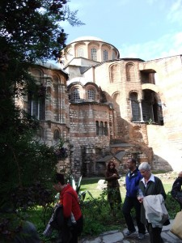 Chorakirche |
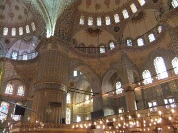 Blaue Moschee |
{kind=link}
{kind=link}
Am folgenden Tag, einem Sonntag, feierten wir zusammen mit einer anderen Pilgergruppe die Hl. Messe in der deutschsprachigen katholischen Gemeinde St. Paul in Istanbul. <http://www.stpaul.de//> Im Anschluss waren wir von Pfarrer Pater Christian Rolke C.M.
|
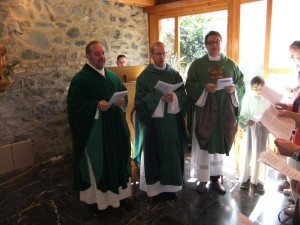 Hl. Messe in St. Paul in Istanbul |
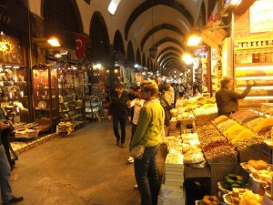 Im Ägyptischen Basar an der Galata Brücke |
{kind=link}
{kind=link}
herzlich zu einem kleinen Umtrunk und zu einer für uns alle aufschlussreichen Information über seine Arbeitsbereiche als katholischer Pfarrer in der Türkei eingeladen.
Sodann führte uns unser Programm über den Ägyptischen Basar an der Galatabrücke weiter zur Hagia Sophia und in den Topkapi-Palast.
|
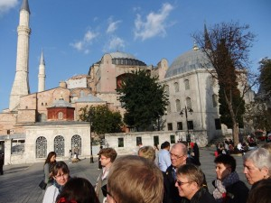 Hagia Sophia |
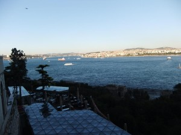 Blick vom Topkapi-Palast über den Bosporus |
{kind=link}
{kind=link}
Unsere zwei Abendessen in Istanbul nahmen wir in typischen Lokalen ein. Einmal unter der Galatabrücke mit Blick auf das nächtliche Flair des Bosporus´, ein anderes Mal in einem kleinen Lokal in der Istanbuler Neustadt. In beiden Lokalen konnten wir frische Landesspezialitäten in sehr angenehmer Atmosphäre genießen.
Am Morgen des dritten Tages erreichten wir nach kurzer Fahrt mit dem Reisebus die Autofähre über das Marmarameer, um am südlichen Ufer die Busfahrt nach Nicäa – dem heutigen Iznik – fortzusetzen. Dort hatte im Jahr 325 das erste und im Jahr 787 das siebte ökumenische Konzil stattgefunden.
Wir nutzten diesen historischen Ort, um am Iznik-See eine Andacht zu halten.
|
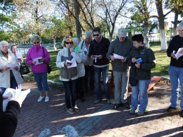 Andacht in Nicäa am Isnik See |
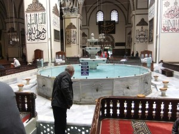 In der Ulu-Cami-Moschee in Bursa |
{kind=link}
{kind=link}
In Bursa besichtigten wir die Ulu-Cami-Moschee und den Seidenbasar. Er lockte natürlich zu einem Bummel entlang der Auslagen. Und wer wurde da nicht schwach, sich einen oder zwei (Seiden)schals zu einem ‚günstigen’ Kurs zu erwerben?
Von hier aus folgten wir der in der Regel vierspurig ausgebauten Landstraße nach Ayvalik an der Ägäisküste.
Nach Übernachtung in einem erstklassigen Hotel standen nun am vierten Tag die Kirchen der Apokalypse auf unserem Pilgerprogramm. Dazu besuchten wir am frühen Morgen die Ausgrabungen der hellenistischen Königsstadt Pergamon, wo sich eine der sieben Kirchen der Apokalypse befand. Von der Akropolis aus, die wir mit einer Seilbahn erreichten, bot sich uns ein herrlicher Ausblick über die Stadt Bergama und über die Stelle, an der der Pergamon-Altar, der im Berliner Pergamon-Museum aufgebaut ist, stand. Bis zum Asklepieion war es von hier aus nur ein „Katzensprung“.
|
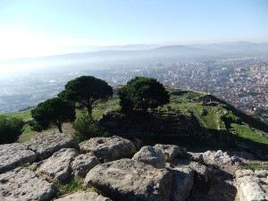 Bei den Kugelzypressen stand der Pergamon-Altar. Weiterer Blick auf Bergama |
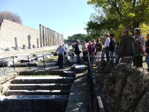 Brunnenbereich im Asklepieion |
{kind=link}
{kind=link}
|
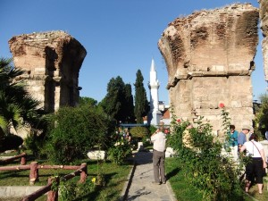 Reste der Kirche St. Johann in Philadelphia, dem heutigen Ort Alasehir |
Unter strahlend blauem Himmel reisten wir weiter nach Philadelphia, dem heutigen Ort Alasehir. Hier trafen wir auf die Ruinen – mächtige Pfeiler der früheren Kirche St. Johann, die ebenfalls zu den Kirchen der Apokalypse zählt. |
{kind=link}
Vorbei an ausgedehnten Olivenhainen und Baumwollfeldern fuhren wir an diesem Spätnachmittag unserem weiteren Ziel entgegen: Pamukkale mit den weltberühmten Kalksinterterrassen. Im Fünf-Sterne-Hotel angekommen, nutzte so mancher unserer Pilgergruppe die Gelegenheit, sich zu nächtlicher Zeit im Thermalbrunnen des Hotels zu entspannen.
|
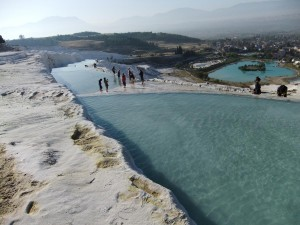 Die weltberühmten Kalksinterterrassen bei Pamukkale |
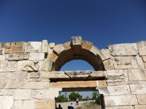 Das christliche Symbol PX in einem Schlussstein in der Ruinenstadt Laodikeia, einer früher mächtigen Handelsmetropole |
{kind=link}
{kind=link}
Bei der Besichtigung der einmaligen Sinterterrassen konnten wir barfuß durch das warme Wasser in diesen Terrassen schreiten und die wuchtigen Überbleibsel eines ehemals über die örtlichen Grenzen hinweg bekannten „Kurortes“ bestaunen.
In Laodikeia, einem riesigen Areal, das es noch auszugraben gilt, war in geschichtlicher Zeit eine der sieben ältesten christlichen Gemeinden Kleinasiens angesiedelt. Der Kolosserbrief des Apostels Paulus gibt hiervon ein lebendiges Zeugnis. Und zu byzantinischr Zeit war dieser Ort Bischofssitz. Mit einer Andacht auf historischem Boden beendeten wir den Besuch Laodikeias´.
Nach dem „obligatorischen“ Besuch einer südöstlich der sehr wohlhabenden Stadt Denizli gelegenen Teppichknüpferei, in der wir sehr freundlich angesprochen und informiert worden sind, führte uns die Reise wieder an die Westküste Anatoliens, um dort von Kusadasi aus in den nächsten Tagen die weiteren Pilgerstationen zu bereisen.
Das am Strand gelegene Hotel Arora diente uns als Ausgangsbasis für den sechsten, siebten und achten Tag unserer Pilgerreise.
Ziele des sechsten Tages waren die historischen Stätten Milet, Didyma und Priene.
In Milet verabschiedete sich nachweislich der Apostel Paulus von den Ältesten seiner Gemeinde von Ephesus. Die Besichtigung der „Faustina Thermen“, der Agora (Marktplatz) und des riesigen Amphitheaters bildeten hier den Besuchsschwerpunkt.
|
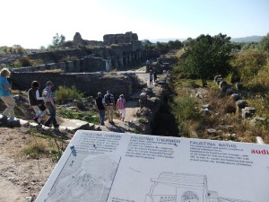 Milet: Blick auf die Faustina-Therme |
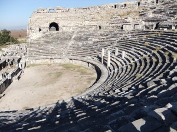 Milet: Theater |
{kind=link}
{kind=link}
Die Orakelstätte in Didyma mit ihren zwei charakteristisch in den Himmel ragenden Säulen ist bereits von weitem zu erkennen. Wie aus den für uns undefinierbaren Lauten des früheren Orakels Deutungen für die Zukunft abgegeben werden konnten, bleibt uns jedoch (bis) heute verschlossen.
|
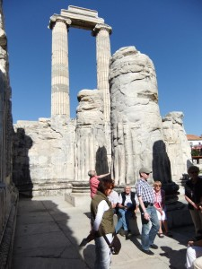 Orakelstätte in Didyma |
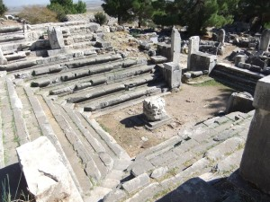 „Ratssaal“ in Priene |
{kind=link}
{kind=link}
Am vorletzten Tag unserer Reise (Freitag, den 25.10.2013) machten wir uns morgens auf zum hoch oben auf dem Berg gelegenen Wallfahrtsheiligtum Meryem Ana, dem Sterbeort Mariens. Dieser Ort liegt bei der Stadt Selcuk, unweit von der antiken Stadt Ephesus.
Es ist wahrscheinlich, dass Maria, die Muttergottes, zusammen mit dem hl. Johannes hierher nach Kleinasien kam und an diesem Ort gewohnt hat und auch hier verstorben ist.
|
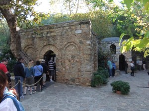 Kapelle über dem Sterbehaus der Muttergottes |
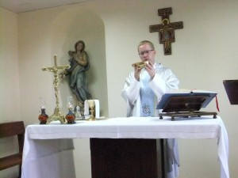 Feier der hl. Messe im Wallfahrtsheiligtum Meryem Ana |
{kind=link}
{kind=link}
Obgleich Tausende Pilger an diesem Morgen die Wallfahrtstätte besuchten, konnten wir in einem Nebengebäude der Kapelle unsere eigene Pilgermesse feiern.
Im Anschluss hieran fuhren wir zu den Ausgrabungsstätten im benachbarten Ephesus. Diese Anlage übertrifft auf Grund ihrer Größe wohl alle anderen Ausgrabungen im Lande. So sind von den Prachtstraßen und Anlagen dieser früher bedeutenden Hafenstadt aus Impulse in die damalige Welt geschickt worden, die z. T. bis heute noch lebendig sind. So hat z. B. in der Marienkirche zu Ephesus im Jahre 431 das dritte ökumenische Konzil stattgefunden.
Vor der Kulisse der erst in den siebziger Jahren des vergangenen Jahrhunderts ausgegrabenen und wieder errichteten Bibliothek hat sich unsere Pilgergruppe zu einem Gruppenfoto aufgestellt (s. o.).
Mit einem Blick auf das große Theater dieser historisch bedeutenden Stadt verabschiedeten wir uns aus Ephesus und am achten Tag unserer Reise aus der Türkei.
{kind=link}
Ephesus: Blick auf das 25000 Menschen fassende Theater
Festzuhalten ist, dass diese Pilgerreise nach Kleinasien unter einem sehr „glücklichen“ Stern stand:
• Wetter und Temperaturen waren während der ganzen Woche ausgezeichnet: stets strahlend blauer Himmel und Temperaturen um die 25 Grad Celsius
• eine bestens informierte türkische Reiseleiterin Müjde Tömbekici, die die geschichtlichen und religiösen Verbindungen geschickt herzustellen wusste und unserer Reisgruppe neben Einblicken in die Sprache und Kultur der Türkei auch Speisespezialitäten zu beschreiben und zu empfehlen wusste
• eine harmonisch zusammenhaltende Gruppe unter Leitung von Pastor Burkhard Schmelz, der in guter Zusammenarbeit mit der türkischen Reiseleiterin dafür sorgte, dass die Interessen „seiner Schäfchen“ gewahrt blieben und sich alle während der Reise wohlfühlen konnten. Die Inhalte seiner Predigten und Andachten waren jeweils haargenau auf die entsprechenden Orte zugeschnitten.
Manfred Berretz
28.10.2013